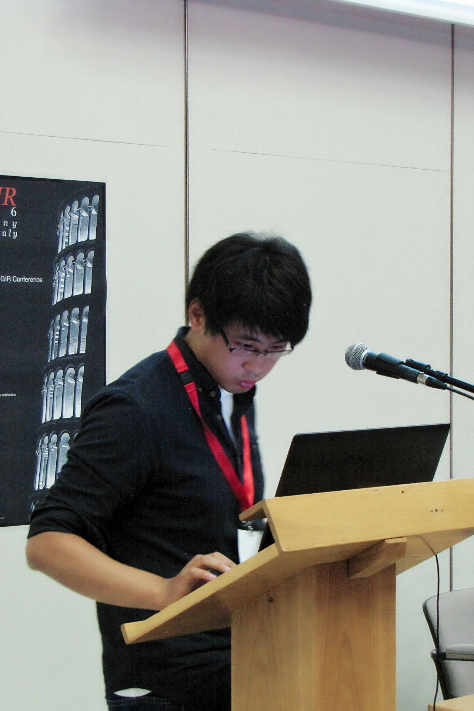

About Me

梁坚 (Jian Liang, Tim)
Associate Professor
Center for Research on Intelligent Perception and Computing
Institute of Automation, Chinese Academy of Sciences
Room 1505, Intelligent Building, 95 Zhongguancun East Road
100190, Haidian District, Beijing, China
👻Resume
♟Github
🎖Google Scholar
📄Arxiv
⇰ liangjian92🌀gmail.com or jian.liang🌀nlpr.ia.ac.cn
Before joining CASIA in June 2021, I was a research fellow at the Vision and Learning Group, National University of Singapore, working with Dr. Jiashi Feng from June 2019 to April 2021.
I obtained Ph.D. in Pattern Recognition and Intelligent Systems from CASIA in Jan 2019, under the supervision of Prof. Tieniu Tan and co-supervision of Prof. Ran He and Prof. Zhenan Sun, and received my bachelor degree in Automation from Xi'an Jiaotong University in June 2013.
My current research interests mainly focus on representation learning, knowledge transfer, trustworthy AI (including security, privacy, or robustness in AI), and their applications in various computer vision problems.
I am open to discussion or collaboration. Feel free to drop me an email if you're interested.
News (the past year)
[2024/12] I am invited as an Area Chair of ICCV 2025. [2024/12] I am invited as an Associate Editor of Pattern Recognition. [2024/12] Two papers have been accepted to AAAI 2025. [2024/12] I am invited as an Area Chair of IJCAI 2025. [2024/11] I am invited as an Area Chair of ICML 2025. [2024/10] Our extension on model fingerprinting has been accepted to IJCV. [2024/09] Our paper on validation of unsupervised domain adaptation methods has finally been accepted to NeurIPS Datasets and Benchmarks Track 2024. [2024/08] I am invited as an Area Chair of ICLR 2025. [2024/07] Our paper on source-free semantic segmentation has finally been accepted to TPAMI. [2024/07] Our survey on test-time adaptation has been accepted to IJCV. [2024/07] Our paper on open-set test-time adaptation has been accepted to ECCV 2024. [2024/05] Three papers have been accepted to ICML 2024. [2024/05] I am invited as an Area Chair of NeurIPS 2024. [2024/03] Our extension on deepfake detection has been accepted to IJCV. [2024/02] Our paper on test-time backdoor defense has been accepted to CVPR 2024. [2024/02] Our blogpost on gradient inversion has been accepted to ICLR BlogPosts 2024. [2024/01] Two papers have been accepted to ICLR 2024.
Recent Work
Protecting Model Adaptation from Trojans in the Unlabeled Data.
Abstract:
AAAI Conference on Artificial Intelligence (AAAI), 2025
[Paper]
[Link]
Exploring Vacant Classes in Label-Skewed Federated Learning.
Abstract:
AAAI Conference on Artificial Intelligence (AAAI), 2025
[Paper]
[Link]
LoRA-Pro: Are Low-Rank Adapters Properly Optimized?
Abstract:
Arxiv technical report, 2024.
[Paper]
[Link]
[Code]
A Comprehensive Survey on Test-Time Adaptation under Distribution Shifts.
International Journal of Computer Vision (IJCV), 2024.
[Paper]
[Code]
Learning Spatiotemporal Inconsistency via Thumbnail Layout for Face Deepfake Detection.
Abstract:
International Journal of Computer Vision (IJCV), 2024.
[Paper]
[Link]
Sample Correlation for Fingerprinting Deep Face Recognition.
Abstract:
International Journal of Computer Vision (IJCV), 2024.
[Paper]
[Link]
[Code]
Realistic Unsupervised CLIP Fine-tuning with Universal Entropy Optimization.
Abstract:
International Conference on Machine Learning (ICML), 2024.
[Paper]
[Code]
Connecting the Dots: Collaborative Fine-tuning for Black-Box Vision-Language Models.
Abstract:
International Conference on Machine Learning (ICML), 2024.
[Paper]
[Link]
[Code]
Trustworthy and Intelligent Machines (TIM) Group
Current Students
Alumni (Since 2019)
Dapeng Hu, Research Scientist @ A*STAR Yujun Shi, PhD @ NUS Mi Luo, PhD @ UT Austin Yifan Zhang, PhD @ NUS Lingxiao He, Research Scientist @ JD Yunbo Wang, Assistant Professor @ CSU Boqiang Xu, Postdoc @ NUS Yuxi Wang, Assistant Professor @ HKISI, CAS Junchi Yu, PhD @ CASIA Yi-Fan Zhang, PhD @ CASIA Ziming Yang, PRC MFA Puning Yang, Master @ CASIA Zixi Zhu, Intern @ CASIA Kekai Sheng, Research Scientist @ Momenta
|